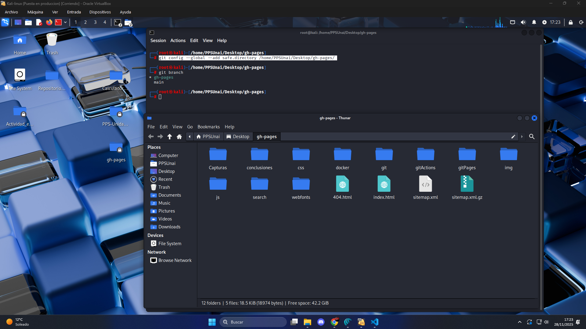
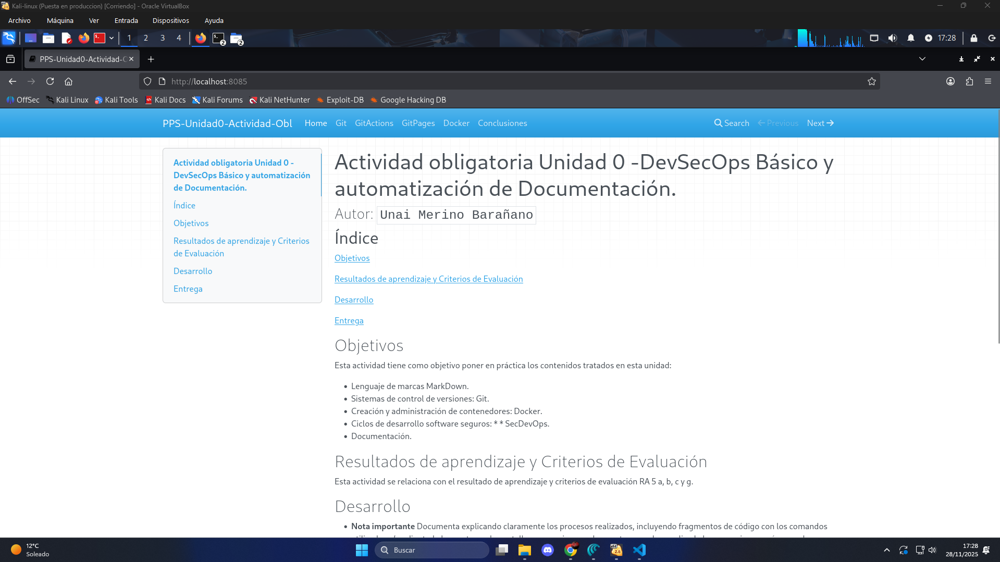

Docker
(Creación y despliegue de documentación mediante contenedor ngynx)
Para este apartado ya dispondremos del contenido estático que MkDocs ha generado en gh-pages y lo montaremos en un contenedor NGINX, mediante el puerto 8085.
Paso 1: Preparar la carpeta estática (rama gh-pages)
En nuestra máquina anfitriona, clonaremos el repo con la rama gh-pages.
git clone git@github.com:vjp-unaiMB/PPS-Unidad0-TareaRA5-Unai-Merino-Bara-ano.git gh-pages

-
Como todavía seguimos en la rama main, seguiremos viendo el mismo contenido que en el repositorio original. Antes de cambiar de rama, vamos a configurarlo como repositorio seguro para que no nos de problemas de autenticidad.
git config --global --add safe.directory /home/PPSUnai/Desktop/gh-pages -
Posteriormente, cambiamos de rama mediante checkout.
git checkout -b gh-pages origin/gh-pages

Usaremos esta nueva carpeta con los archivos ya visibles de la rama gh-pages para el bind‑mount.
Paso2: Crear el contenedor NGINX.
Para la creación de nuestro contenedor ejecutaremos un comando Docker RUN en el que configuraremos el nombre, el puerto 8085 , un binmound con nuestra carpeta e indincamos también que usaremos una imágen de Nginx en su última versión.
NGINX sirve estáticos desde /usr/share/nginx/html dentro del contenedor, allí montremos nuestra carpeta con el sitio de MkDocs.
docker run -d
--name PPSUnidad0-Tarea_Unai-Merino
-p 8085:80
-v /ruta/absoluta/a/gh-pages:/usr/share/nginx/html:ro
nginx:latest

RESULTADO FINAL:
Observamos que se ha desplegado correctamente accediendo mediante el puerto en el naveador.
